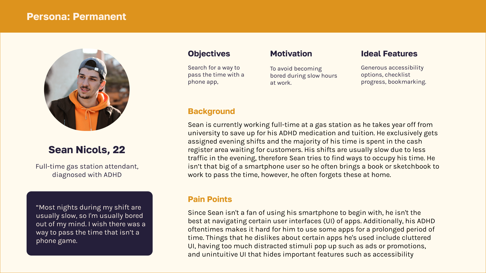
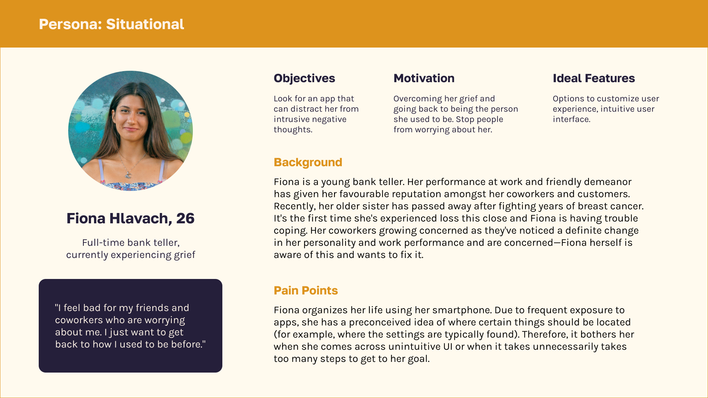
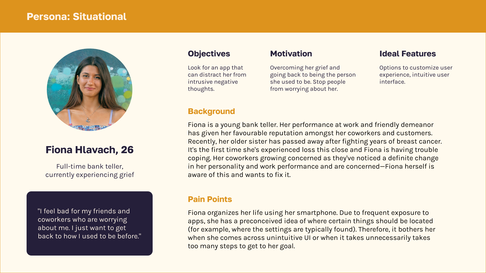
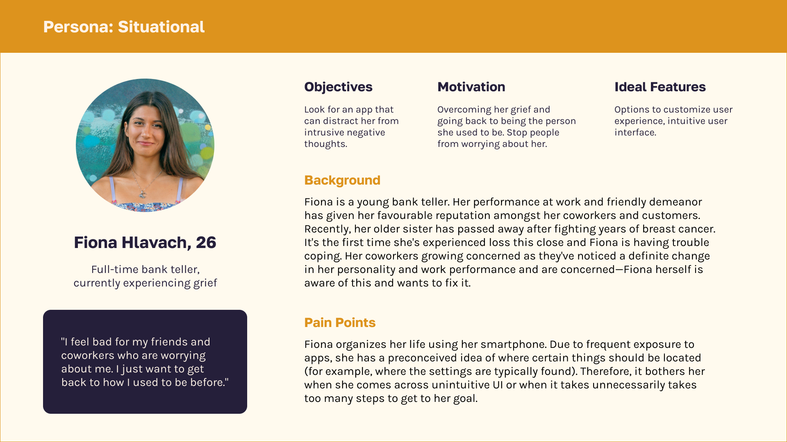

Designing features that improve the experience of using an eBook
app, making it more accessible to users with ADHD.
TEAM
Myself
ROLE
Designer,
researcher
TIMELINE
3 weeks
TOOLS
Adobe XD,
Figma
Background
Everand is a growing digital library app that features much more than
just eBooks and audiobooks. Not everybody who uses a reading app does
so with leisure. Oftentimes, users of these apps are students who are
running on a deadline.
Invisible disabilities are
especially often overlooked when it comes to designing for
accessibility. In this case study, I look at Attention Deficit
Hyperactivity Disorder (ADHD) specifically--a neurodevelopmental
disorder that affects 2.6% of adults worldwide--and find possible
solutions to improve the user experience.
PROBLEM STATEMENT
“How might we make the Everand reading experience more accessible to
people with poor attention?"
ADDED FEATURES
Final Prototype
PROCESS
The Journey
The project utilized the Double Diamond method as summarized below.
DISCOVER
Constraint Mapping
I began the Discover stage by doing a Constraint Mapping activity
where I brainstormed permanent, situational, and temporary constraints
that users of the app may have. These were adopted from Microsoft's
Inclusive Design methodology.
Type of Constraint
Permanent
Constraint
Temporary
Constraint
Situational
Constraint
Visual impairment
User is permanently blind in one eye
User is trying to read in a poorly lit environment
User currently has blurred vision from an eye infection
Trouble focusing on task
User has Attention Deficit Hyperactivity Disorder (ADHD)
User is trying to perform tasks using the app in a distracting
environment
User currently has blurred vision from an eye infection
Poor motor performance
User has developed arthritis on both hands
User is trying to perform tasks while carrying groceries
User is currently wearing a sling for an arm injury
Slow processing speed
User has cognitive decline due to old age
User is trying to use the app while simultaneously walking to
their destination
The app is only available in English which is not the user's first
language
Many accessibility improvements address physical constraints.
Therefore, I decided to solve for a mental constraint instead.
According to Microsoft, finding solutions for permanent constraints
benefits everyone, so I used users with ADHD as a baseline for my
research.
DISCOVER
KWH(L) Chart
Before developing solutions, I needed to gain a deeper understanding
of ADHD and how this demographic interacts with technology and
reading. I filled out the first three components of a KWHL chart to
help me get started.
What do I Know?
Reading is an activity that requires sustained attention.
Everand, an eBook app, may have users that struggle
Attention deficit can be permanent, temporary or situational.
ADHD manifests differently depending on the individual
Everand currently has little accessibility features. For
instance, it does not support screen readers
that are often used by users with visual impairment.
What do I need to find out?
What are some common challenges that people with attention
deficit face in their everyday lives?
What problems do these people experience while using the
Everand app?
What accessibility features are important in aiding people
with attention deficit? Which of these features are applicable
with the Everand app?
Are there any pre-existing features that may help meet these
needs if we simply modify them? Or do new features have to be
implemented?
How will I find the information I need?
Collecting information through secondary research using
academic articles on ADHD and attention in general.
Primary observation (1): observing an individual who has ADHD
using the Scribd app. Alternatively, the participant can be
put in a roleplay situation where they may experience
attention deficit.
Primary observation (2): conducting a survey with the same
participant after the observation phase. Questions about their
emotions/thoughts about using the app will be asked along with
any suggestions on how the app can be improved to smoothen
their experience.
DISCOVER
Research
An individual with diagnosed ADHD was recruited to participate in a
semi-structured interview. I asked questions regarding their general
experience living with ADHD. This was followed by an exploration of
the Everand app and a ten minute task to read the first chapter of a
novel of their choice. Afterwards, questions were asked about the
experience they just had with the app. Below is an anonymized summary
of the interview's key points.
Interview Summary
User's experience with ADHD
Struggles with tasks that take a prolonged period of time or if
they aren't awarded immediately (dopamine). Participant talks
about how he manages his ADHD through a planner/checklist,
sticking to a routine, and the pressure of time.
General experience
Interviewer: What sort of
tasks do you find are more difficult to do because of ADHD, if
any? Participant: Oh, loads of
tasks. [Give a few examples.] Anything that takes more than,
like 20 seconds. Interviewer: Even if you're still interested in
it, it'll still be difficult? Participant: Sometimes. It's
easy to get distracted. Interviewer: What about, like, starting the
task? Participant: Yeah, that too.
I've still got like [participant lists things he hasn't started
yet such as 5 model building kits and a book he bought last
year]. It's just hard to focus on stuff. Sometimes. I think
games are easier to focus on because they give you the-the good
brain stuff. [Oh, I see, I see.] Participant: What's it called?
Dopamine. Like, they give it to you for doing nothing,
basically. As far as I know anyways. That's why other stuff's
hard because you don't wanna--you're like a dopamine addict, I
guess.
Managing ADHD
Interviewer:Is there anything that you
personally do to manage/make these tasks easier for you to
do? Participant: I write them
down. A routine helps a lot. Like, uh, you know how people don't
do stuff until like the last second? [Yeah.] I kind of use that
against it, kind of. Like, you go: "Well, I have to do this, and
then this, and then this. And I've only got like an hour or
something." Participant: [Gives example
about going to the gym before work and having to leave quick
enough to shower at home] You kind of lock yourself into "Well,
if I don't do this, I'll be late" and it kind of makes you do
it. You don't do it unless something bad happens.
User's experience with Everand
Easy to navigate due to prior experience with apps. Found spacing between words to be weird. Mentioned how there's no tutorial. Had some difficulty completing the reading task and said they prefer reading a physical book due to less distractions.
Impressions of App ADHD
Interviewer: What are your first impressions of the app? Did you overall find it difficult or easy to
navigate? Participant: Uh, I mean it's easy enough to navigate, but I feel like it's because I've used other apps. But
I guess most people have used other apps. Some stuff's weird though, like, the spacing and no numbers
to tell me what my font size is. Participant: It doesn't teach you, right? There's no, like tutorial. I guess apps don't need a tutorial, but
there's nothing, like, flashing going: "This button does this." Like, I had to look for things myself. Participant: If I hadn't looked for them [referring to the Exploring the App phase during observation], I
would have just read and gone "Wait, there's a highlight option?"
Reading Experience
Interviewer: How is your experience reading in general? Participant: Hm difficult? I was reading it, but at the same time not really reading it. Interviewer: Do you find it easier reading on screens now since we use our phones often or would you
still prefer a physical book? Participant: I feel like a books easier because if it's on your phone, like, a text or notification will pop up
and you'll go "Oh, what's that?" and then you forget what you were doing. And then before you know it,
you open up YouTube again. Participant: [Talks about how Kindles are good because you can focus on reading without notifications]
Desired Features
Participant suggests a feature where you get rewarded for your reading progress. They start going in depth, suggesting highliting parts of the page/book that you've already read. This would act as a checklist, allowing users to feel more accomplished.
Rewarding Progress
Interviewer: What sort of features do you wish the app had to make the reading experience easier for you?
Considering your ADHD or any difficulties you encountered. Participant: Hm, it's hard to know what you'd need until you've seen it and I'm not sure what would help. I can't
really think of anything the app could do unless it, like, gives you XP (experience points) for clicking words or
highlight. Interviewer: Oh, like a completion thing? Participant: Yeah, yeah, that would probably work. Like, I don't know you get, like, an achievement for reading a
book. I'm not competitive though, so it wouldn't really help me to be like "Oh, I got more book challenges done."
More Suggestions
Participant: It's such a hard question because I don't know. I don't know. What if it highlighted as I read? Oh yeah,
so if you were interacted with it more, then that'd probably help, right? [Explain?] So, like, you click a line as you've
read it and then it highlights it. So you feel like you're getting-completing things. Like a checklist of book lines. That'd
probably help especially if you like checklists. Interviewer: So would you like the highlights to be visible all the time or the checklist is something that you open
and close? Participant: Nooo, you'd want it all the time. Well, you're not gonna re-read any lines. Plus, it might help you
remember: "I read this line, then check." Plus, you'd pay more attention then 'cause you'd be checking off as you go.
There has to be an app for checklist for pages, right? There's no way someone hasn't done that. Interviewer: I actually don't think so--wait, so you think a checklist for pages would be good enough as opposed to
a checklist for lines? Participant: I'd do it for lines, but.. I mean, okay, how about it's lines, but you go back to the main menu and then it
has ticks next to each chapter or page that you've read. You know what I mean? Then you'd feel like accomplished,
right? Like Duolingo, right?
User Observation
As the user was performing the reading task, I observed their
behaviour and took notes. These notes were then put into a Spradley's
Matrix. This data along with the interview results are analyzed in
conjunction with the secondary research to draw insights. View the Spradley's Matrix ⭢
Secondary Research
Scholarly articles related to ADHD, reading, and acessibility were
read. Literature reviews of these articles were made and my key
findings are as follows:
Individuals with attention deficit have poor reading comprehension
when reading digitally which is correlated to their decreased
sustained attention (Ben-Yehudah and Brann; Stern et al.).
Text-to-speech may assist people with ADHD understand what they are
reading more clearly and have less problems with reading in general
(Kyriakaki and Driga 207).
Reading aids such as reading guides and highlights
help people with ADHD concentrate on one line of
text at a time, minimizing visual distractions and
improving reading comprehension and tracking
(Kyriakaki and Driga 207).
Apps that use strategies including
gamification, interactive activities, and audiovisual
stimulation provide an organized
and encouraging environment for people with ADHD
to develop they attention skills by including
elements like progress tracking and incentives
(Kyriakaki and Driga 208).
DEFINE
Personas
Using data from all research sources about ADHD, I developed three
personas to capture each type of contstraint (permanent, temporary,
and situational) centered around attention deficit. Each persona can
be viewed by using the dot indicator below.


DEFINE
Proposed Solution
Analyzing research and creating personas allowed me to develop a
possible solution to solving the users’ mismatched interaction.
A venn diagram including all of the possible solutions gathered from
each source of research is created. Here, I can hone in on which
features are more necessary which have been highlighted in yellow.
Although the tutorial was only mentioned on one side, I felt that it
should be considered since it increases user-friendliness. According
to an NNGroup article, icons weren't sufficient in letting users know
what features were available and therefore a tutorial may be a good
idea to implement.
DEVELOP
UI Style Guide
As part of the process, I analyzed the styling of the Everand app in
order to adapt my features in. Below is a summarized style guide.
DEVELOP
Wireframes
Wireframes were created utilizing the style guide. Low-fidelity
wireframes were made first and then later shown to the same participant for
feedback.
DELIVER
Reflection
Mental disabilities shouldn't be considered less important just
because we can't see them. We as designers must consider all possible
usability challenges ours users face. Through this project, I gained a
better understanding of users with ADHD by working closely with one. This way, I was able to become empathetic with their personal experiences. This project reinforced the importance of research and working with users to reach a solution. Without doing the preliminary research, my solutions would have been totally different.


 
